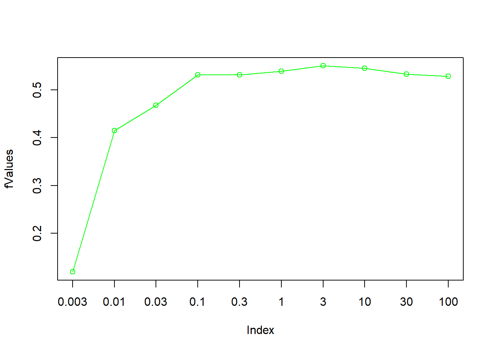
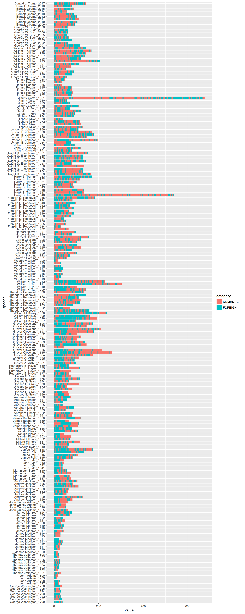

In this tutorial we show the use of supervised machine learning for text classification. The basic idea is to compute a model based on training data. Training data usually are hand-coded documents or text snippets associated with a specific category (class). From these texts, features (e.g. words) are extracted and associated with categories in the model. The model then can be utilized to categorize new texts.
We cover basic principles of the process such as cross-validation and feature engineering in the following steps:
As data, again we use the “State of the Union”-addresses. But this time, we operate on paragraphs instead of documents. The file data/sotu_paragraphs.csv provides the speeches in the appropriate format. For each paragraph, we want to know whether it covers content related to domestic or foreign affairs.
As already known, we read the text source (21334 paragraphs from 231 speeches). For the moment, we apply very basic preprocessing.
options(stringsAsFactors = FALSE)
library(tm)
textdata <- read.csv("data/sotu_paragraphs.csv", sep = ";", encoding = "UTF-8")
english_stopwords <- readLines("resources/stopwords_en.txt", encoding = "UTF-8")
# Create corpus object
m <- list(ID = "id", content = "text", DateTimeStamp = "date")
myReader <- readTabular(mapping = m)
corpus <- Corpus(DataframeSource(textdata), readerControl = list(reader = myReader))
# Preprocessing chain
processedCorpus <- tm_map(corpus, removePunctuation, preserve_intra_word_dashes = TRUE)
processedCorpus <- tm_map(processedCorpus, removeNumbers)
processedCorpus <- tm_map(processedCorpus, content_transformer(tolower))
processedCorpus <- tm_map(processedCorpus, stripWhitespace)We provide 300 manually annotated example paragraphs as training data. In a CSV-file, the paragraph id and the corresponding category is stored.
# Read previously annotated training data
trainingData <- read.csv2("data/paragraph_training_data_format.csv", stringsAsFactors = T)
# Training data format
colnames(trainingData)## [1] "ID" "LABEL"# Example paragraph Foreign Affairs
set.seed(13)
domestic_example <- sample(trainingData$ID[trainingData$LABEL == "DOMESTIC"], 1)
as.character(corpus[[domestic_example]])## [1] "For present purposes, however, the last number given should be considerably\nreduced. Without attempting to enumerate all, it will be conceded that\nthere should be deducted from those which it includes 375,143 carpenters\nand joiners, 285,401 milliners, dressmakers, and seamstresses, 172,726\nblacksmiths, 133,756 tailors and tailoresses, 102,473 masons, 76,241\nbutchers, 41,309 bakers, 22,083 plasterers, and 4,891 engaged in\nmanufacturing agricultural implements, amounting in the aggregate to\n1,214,023, leaving 2,623,089 persons employed in such manufacturing\nindustries as are claimed to be benefited by a high tariff."foreign_example <- sample(trainingData$ID[trainingData$LABEL == "FOREIGN"], 1)
as.character(corpus[[foreign_example]])## [1] "Our Army and Navy are being maintained at a high state of efficiency, under\nofficers of high training and intelligence, supported by a devoted\npersonnel of the rank and file. The London naval treaty has brought\nimportant economies in the conduct of the Navy. The Navy Department will\nlay before the committees of the Congress recommendations for a program of\nauthorization of new construction which should be initiated in the fiscal\nyear of 1932."How is the ratio between domestic and foreign content in the training data?
classCounts <- table(trainingData[, "LABEL"])
print(classCounts)##
## DOMESTIC FOREIGN
## 209 91numberOfDocuments <- nrow(trainingData)For our first classification attempt, we create a Document-Term Matrix from the preprocessed corpus and use the extracted single words (unigrams) as features for the classification. Since the resulting DTM might contain too many words, we restrict the vocabulary to a minimum frequency.
# Base line: create feature set out of unigrams
DTM <- DocumentTermMatrix(processedCorpus)
# How many features do we have?
dim(DTM)## [1] 21334 28038# Probably the DTM is too big for the classifier. Let us reduce it
minimumFrequency <- 5
DTM <- DocumentTermMatrix(processedCorpus, control = list(bounds = list(global = c(minimumFrequency, Inf))))
dim(DTM)## [1] 21334 10813Now we build a linear SVM classification model with the LiblineaR package. SVM is a large margin classification approach which tries to find an optimal seperating hyperplane between data points of two different classes. There are a number of different kernel functions to compute the feature space where this hyperplane is located in (e.g. radial, polynomial, sigmoid kernel). For text classification usually the “linear” kernel is the best choice. The package LiblineaR wraps around the open source library LIBLINEAR which provides a very fast implementation.
First, we load the packages. Since Liblinear requires a special Sparse Matrix format, we also load the “SparseM” package and a conversion function which allows to convert slam-matrices (as used in the tm package) into SparseM-matrices.
Then, we split the annotated data into a training set (80%) and a test set (20%) using a boolean selector. The expression assigned to selector_idx creates a boolean vector of length 300 containing a FALSE value in every fifths position. This selector is used to select to training set. Its inverted vector (!) is used to select the test set.
require(LiblineaR)
require(SparseM)
source("utils.R")
annotatedDTM <- DTM[trainingData[, "ID"], ]
annotatedDTM <- convertSlamToSparseM(annotatedDTM)
annotatedLabels <- trainingData[, "LABEL"]
# split into training and test set
selector_idx <- rep(c(rep(TRUE, 4), FALSE), length.out = numberOfDocuments)
trainingDTM <- annotatedDTM[selector_idx, ]
trainingLabels <- annotatedLabels[selector_idx]
testDTM <- annotatedDTM[!selector_idx, ]
testLabels <- annotatedLabels[!selector_idx]
# create SVM model
model <- LiblineaR(trainingDTM, trainingLabels)
summary(model)## Length Class Mode
## TypeDetail 1 -none- character
## Type 1 -none- numeric
## W 10814 -none- numeric
## Bias 1 -none- logical
## ClassNames 2 factor numeric
## NbClass 1 -none- numericThe model created by the LiblineaR function can now be utilized to predict the labels of the test set. Then we compare the result of the automatic classification to our known labels to determine the accuracy of the process.
classification <- predict(model, testDTM)
predictedLabels <- classification$predictions
contingencyTable <- table(predictedLabels, testLabels)
print(contingencyTable) # Kontingenztabelle ausgeben## testLabels
## predictedLabels DOMESTIC FOREIGN
## DOMESTIC 27 5
## FOREIGN 18 10accuracy <- sum(diag(contingencyTable)) / length(testLabels)
print(accuracy) # Accuracy = Anteil korrekt klassifizierter Elemente## [1] 0.6166667The accuracy of 0.6166667 appears moderate for a first try. But how does it actually relate to a base line? Think of the imbalanced class proportions in our training set. Let us create a pseudo classification as base line, in which we do not classify at all, but simply assume the label “DOMESTIC” or “FOREIGN” for each paragraph.
We further employ a function called F.measure which gives more differentiated measures than simple accuracy (A)to determine the classification quality. The F.measure (F) is the harmonic mean of Precision (P) and Recall (R) (see https://en.wikipedia.org/wiki/Precision_and_recall#Definition_.28classification_context.29 for Details).
# Create pseudo classification
pseudoLabelsDOM <- factor(rep("DOMESTIC", length(testLabels)), levels(testLabels))
pseudoLabelsFOR <- factor(rep("FOREIGN", length(testLabels)), levels(testLabels))
# Evaluation of former SVM classification with F-measures
F.measure(predictedLabels, testLabels, positiveClassName = "DOMESTIC")## P R S F A Pos.
## 0.8437500 0.6000000 0.6666667 0.7012987 0.6166667 45.0000000F.measure(predictedLabels, testLabels, positiveClassName = "FOREIGN")## P R S F A Pos.
## 0.3571429 0.6666667 0.6000000 0.4651163 0.6166667 15.0000000# Evaluation of pseudo classification with F-measures
F.measure(pseudoLabelsDOM, testLabels, positiveClassName = "DOMESTIC")## P R S F A Pos.
## 0.7500000 1.0000000 0.0000000 0.8571429 0.7500000 45.0000000F.measure(pseudoLabelsFOR, testLabels, positiveClassName = "FOREIGN")## P R S F A Pos.
## 0.25 1.00 0.00 0.40 0.25 15.00This little experiment shows that depending on the definition of our positive class, the accuracy is either 25% or 75% if not classifying at all. In both cases the specificity (S), the true negative rate, is zero. From this, we can learn two things:
To evaluate a classifier, the training data can be divided into training and test data. The model learns on the former and is evaluated with the latter. In this procedure, we unfortunately lose the test data to learn from. If there is little training data available, the k-fold cross-validation is a more suitable procedure.
For this, training data is split into e.g. K = 10 parts. Then k-1 parts are used for training and 1 part is used for testing. This process is repeated k times, with another split of the overall data set for testing in each iteration.
The final result is determined from the average of the quality of the k runs. This allows a good approximation to the classification quality, including all training data.
The get_k_fold_logical_indexes function introduced below returns a logical vector for the fold j for cross-validation. It splits a training data record of the size n into k folds. The resulting vector and its negated vector can be used for easy training data / test data selection.
get_k_fold_logical_indexes <- function(j, k, n) {
if (j > k) stop("Cannot select fold larger than nFolds")
fold_lidx <- rep(FALSE, k)
fold_lidx[j] <- TRUE
fold_lidx <- rep(fold_lidx, length.out = n)
return(fold_lidx)
}
# Example usage
get_k_fold_logical_indexes(1, k = 10, n = 12)## [1] TRUE FALSE FALSE FALSE FALSE FALSE FALSE FALSE FALSE FALSE TRUE
## [12] FALSEget_k_fold_logical_indexes(2, k = 10, n = 12)## [1] FALSE TRUE FALSE FALSE FALSE FALSE FALSE FALSE FALSE FALSE FALSE
## [12] TRUEget_k_fold_logical_indexes(3, k = 10, n = 12)## [1] FALSE FALSE TRUE FALSE FALSE FALSE FALSE FALSE FALSE FALSE FALSE
## [12] FALSENow we run 1) splitting of the annotated data, 2) model computation and testing in one for-loop.
k <- 10
evalMeasures <- NULL
for (j in 1:k) {
# create j-th boolean selection vector
currentFold <- get_k_fold_logical_indexes(j, k, nrow(trainingDTM))
# select training data split
foldDTM <- annotatedDTM[!currentFold, ]
foldLabels <- annotatedLabels[!currentFold]
# create model
model <- LiblineaR(foldDTM, foldLabels)
# select test data split
testSet <- annotatedDTM[currentFold, ]
testLabels <- annotatedLabels[currentFold]
# predict test labels
predictedLabels <- predict(model, testSet)$predictions
# evaluate predicted against test labels
kthEvaluation <- F.measure(predictedLabels, testLabels, positiveClassName = "FOREIGN")
# combine evaluation measures for k runs
evalMeasures <- rbind(evalMeasures, kthEvaluation)
}
# Final evaluation values of k runs:
print(evalMeasures)## P R S F A Pos.
## kthEvaluation 0.5454545 0.6000000 0.7500000 0.5714286 0.7000000 10
## kthEvaluation 0.7000000 0.8750000 0.5714286 0.7777778 0.7333333 16
## kthEvaluation 0.3636364 0.5714286 0.6956522 0.4444444 0.6666667 7
## kthEvaluation 0.5000000 0.8888889 0.6190476 0.6400000 0.7000000 9
## kthEvaluation 0.4166667 0.7142857 0.6956522 0.5263158 0.7000000 7
## kthEvaluation 0.3888889 1.0000000 0.5217391 0.5600000 0.6333333 7
## kthEvaluation 0.5000000 0.7272727 0.5789474 0.5925926 0.6333333 11
## kthEvaluation 0.4166667 0.8333333 0.7083333 0.5555556 0.7333333 6
## kthEvaluation 0.5555556 1.0000000 0.6000000 0.7142857 0.7333333 10
## kthEvaluation 0.3846154 0.6250000 0.6363636 0.4761905 0.6333333 8# Average over all folds
print(colMeans(evalMeasures))## P R S F A Pos.
## 0.4771484 0.7835209 0.6377164 0.5858591 0.6866667 9.1000000Accuracy is around 70%, F-measure is around 0.60. Let’s try some approaches to optimize the automatic classification.
These first tries have clarified how to utilize and evaluate machine learning functions for text in R. Now we concentrate on optimization strategies to get better results from the automatic classification process.
For a linear SVM the cost parameter (C-parameter) is the most important parameter to tweak (for other SVM kernels such as the radial or polynomial kernel there are other important parameters which influence the shape of the kernel function). The C-parameter determines the cost of classifications on the training data during SVM training.
High values of C lead to a high costs of misclassification. The decision boundary which the classifier learns, will try to avoid any misclassification. But, values too high can lead to an overfitting of the model. This means, it adapts well to the training data, but classification will more likely fail on new test data.
Low values of C lead to less strict decision boundaries, which accepts some misclassifications. Such a model might generalize better on unseen data. But in the end, there is now exact method to determine a good C-value beforehand. It rather is an empirical question. To choose an optimal C-value, we simply try from a range of values, run k-fold-cross-validation for each single value and decide for the C which resulted in the best classification accuracy / F-measure. This is realized in the following for-loop, which utilizes the function k_fold_cross_validation. The function (have a look into F.measure.R) simply wraps the code for cross-validation, we used above.
cParameterValues <- c(0.003, 0.01, 0.03, 0.1, 0.3, 1, 3 , 10, 30, 100)
fValues <- NULL
for (cParameter in cParameterValues) {
print(paste0("C = ", cParameter))
evalMeasures <- k_fold_cross_validation(annotatedDTM, annotatedLabels, cost = cParameter)
fValues <- c(fValues, evalMeasures["F"])
}## [1] "C = 0.003"
## [1] "C = 0.01"
## [1] "C = 0.03"
## [1] "C = 0.1"
## [1] "C = 0.3"
## [1] "C = 1"
## [1] "C = 3"
## [1] "C = 10"
## [1] "C = 30"
## [1] "C = 100"plot(fValues, type="o", col="green", xaxt="n")
axis(1,at=1:length(cParameterValues), labels = cParameterValues)
bestC <- cParameterValues[which.max(fValues)]
print(paste0("Best C value: ", bestC, ", F1 = ", max(fValues)))## [1] "Best C value: 1, F1 = 0.585859092174882"From the empirical test, we can obtain C = 1 as optimal choice for the SVM cost parameter. On the current training data set with the current features it achieves 0.5858591 F-score.
Not only the SVM has parameters which can be optimized to improve the results. More important are the features used for classification. In our preprocessing chain above, we extracted single types and transformed them into lower case. We now add different preprocessing steps and check on the results. To get an optimal cost parameter for each new feature set, we wrapped the code for C-parameter optimization into the optimize_C function.
Stop word removal
Stop words often do not contribute to the meaning of a text. For the decision between DOMESTIC and FOREIGN affairs, we do not expect any useful information from them. So let’s remove them and if it improves the classifier.
processedCorpus <- tm_map(corpus, removePunctuation, preserve_intra_word_dashes = TRUE)
processedCorpus <- tm_map(processedCorpus, removeNumbers)
processedCorpus <- tm_map(processedCorpus, content_transformer(tolower))
processedCorpus <- tm_map(processedCorpus, removeWords, english_stopwords)
processedCorpus <- tm_map(processedCorpus, stripWhitespace)
as.character(processedCorpus[[4963]])## [1] " legislation extend colony newfoundland articles treaty washington day protocol effect signed behalf united states great britain day duly proclaimed day copy proclamation submitted herewith"minimumFrequency <- 5
DTM <- DocumentTermMatrix(processedCorpus, control = list(bounds = list(global = c(minimumFrequency, Inf))))
dim(DTM)## [1] 21334 10375annotatedDTM <- convertSlamToSparseM(DTM[trainingData[, "ID"], ])
best_C <- optimize_C(annotatedDTM, annotatedLabels)## [1] "C = 0.003"
## [1] "C = 0.01"
## [1] "C = 0.03"
## [1] "C = 0.1"
## [1] "C = 0.3"
## [1] "C = 1"
## [1] "C = 3"
## [1] "C = 10"
## [1] "C = 30"
## [1] "C = 100"
## [1] "Best C value: 0.03, F1 = 0.63250677828278"k_fold_cross_validation(annotatedDTM, annotatedLabels, cost = best_C)## P R S F A Pos.
## 0.5743260 0.7254419 0.7813149 0.6325068 0.7666667 9.1000000Now let us see, if the use of bigrams, i.e. concatenations of sequences of two words can improve the result. Bigrams help to overcome a little bit the bag-of-words assumption of Document-Term-Matrices. With them, we can learn multi-word units such as great britain, international affairs or united nations as meaningful features for our task. The package tokenizers provides a simple and fast implementation to generate n-grams.
Bigrams
require(tokenizers)
tokenize_ngrams("This is a test", n = 2, n_min = 1, ngram_delim = "_", simplify = T)## [1] "this" "this_is" "is" "is_a" "a" "a_test" "test"bigram_corpus <- tm_map(processedCorpus, content_transformer(tokenize_ngrams), n = 2, n_min = 1, ngram_delim = "_", simplify = T)
minimumFrequency <- 5
DTM <- DocumentTermMatrix(bigram_corpus, control = list(bounds = list(global = c(minimumFrequency, Inf))))
dim(DTM)## [1] 21334 22782sample(colnames(DTM), 10)## [1] "government_fail" "board_constituted" "vital_interests"
## [4] "active_military" "military_officers" "relations_venezuela"
## [7] "storage" "america_proud" "permission"
## [10] "structure"annotatedDTM <- convertSlamToSparseM(DTM[trainingData[, "ID"], ])
best_C <- optimize_C(annotatedDTM, annotatedLabels)## [1] "C = 0.003"
## [1] "C = 0.01"
## [1] "C = 0.03"
## [1] "C = 0.1"
## [1] "C = 0.3"
## [1] "C = 1"
## [1] "C = 3"
## [1] "C = 10"
## [1] "C = 30"
## [1] "C = 100"
## [1] "Best C value: 0.1, F1 = 0.632846173434409"k_fold_cross_validation(annotatedDTM, annotatedLabels, cost = best_C)## P R S F A Pos.
## 0.5516524 0.7598737 0.7460819 0.6328462 0.7566667 9.1000000Minimum feature frequency
Up to this point, we dropped features occurring less than five times in our data. Let’s see if we include more features by decreasing the minimum frequency.
# More features
minimumFrequency <- 2
DTM <- DocumentTermMatrix(bigram_corpus, control = list(bounds = list(global = c(minimumFrequency, Inf))))
dim(DTM)## [1] 21334 96021annotatedDTM <- convertSlamToSparseM(DTM[trainingData[, "ID"], ])
best_C <- optimize_C(annotatedDTM, annotatedLabels)## [1] "C = 0.003"
## [1] "C = 0.01"
## [1] "C = 0.03"
## [1] "C = 0.1"
## [1] "C = 0.3"
## [1] "C = 1"
## [1] "C = 3"
## [1] "C = 10"
## [1] "C = 30"
## [1] "C = 100"
## [1] "Best C value: 0.1, F1 = 0.632846173434409"k_fold_cross_validation(annotatedDTM, annotatedLabels, cost = best_C)## P R S F A Pos.
## 0.5516524 0.7598737 0.7460819 0.6328462 0.7566667 9.1000000Stemming
As a last method, we utilize stemming (before bigram-concatenation) to unify different variants of the same semantic form (such as nation and nations).
# Stemming
stemmed_corpus <- tm_map(processedCorpus, stemDocument, language = "english")
stemmed_bigram_corpus <- tm_map(stemmed_corpus, content_transformer(tokenize_ngrams), n = 2, n_min = 1, ngram_delim = "_", simplify = T)
minimumFrequency <- 2
DTM <- DocumentTermMatrix(stemmed_bigram_corpus, control = list(bounds = list(global = c(minimumFrequency, Inf))))
dim(DTM)## [1] 21334 106152annotatedDTM <- convertSlamToSparseM(DTM[trainingData[, "ID"], ])
best_C <- optimize_C(annotatedDTM, annotatedLabels)## [1] "C = 0.003"
## [1] "C = 0.01"
## [1] "C = 0.03"
## [1] "C = 0.1"
## [1] "C = 0.3"
## [1] "C = 1"
## [1] "C = 3"
## [1] "C = 10"
## [1] "C = 30"
## [1] "C = 100"
## [1] "Best C value: 0.1, F1 = 0.644626432391138"k_fold_cross_validation(annotatedDTM, annotatedLabels, cost = best_C)## P R S F A Pos.
## 0.5696785 0.7775685 0.7424381 0.6446264 0.7600000 9.1000000While each individual approach to optimize our text features for classification did not improve the result greatly, some combinations indeed have a significant effect. Especially the combination of stemming and bigrams appears to be useful to improve the results.
CAUTION: Testing different features must be done for each new task / language individually, since there is no “one-size fits all” approach to this.
GENERAL ADVISE: For this tutorial we utilized a rather small training set of 300 examples, 91 of them in the positive class. Better classification accuracy can be expected, if more training data is available. Hence, instead investing time into feature optimization it will probably be also a good idea to invest into generation of more training data.
We now apply our final classification model to the entire data set, to determine the occurrence of FORGEIN/DOMESTIC affairs related content in each single speech.
# Final classification
final_model <- LiblineaR(annotatedDTM, annotatedLabels, cost = best_C)
final_labels <- predict(final_model, convertSlamToSparseM(DTM))$predictions
table(final_labels) / sum(table(final_labels))## final_labels
## DOMESTIC FOREIGN
## 0.5417174 0.4582826We see that the classifier puts the majority of the around 21,000 paragraphs into the DOMESTIC category. We can visualize the result as a bar chart with ggplot2. For better readability
speech_year <- substr(textdata$date, 0, 4)
presidents_df <- data.frame(
speech = paste0(textdata$president, "_", speech_year),
category = final_labels,
value = 1
)
# preserve speech order in chart by using factors
presidents_df$speech <- factor(presidents_df$speech, levels = unique(presidents_df$speech))
require(ggplot2)
ggplot(presidents_df, aes(x = speech, y = value, fill = category)) + geom_bar(stat = "identity") + coord_flip()
Can you see how DOMESTIC affairs related content gets more important over the course of centuries? Actually, also the position of DOMESTIC policy statements changes around the turn from the 19th to 20th century.
irr package for R.proba = T parameter for the predict method during the final classification to evaluate on label probabilities instead of concrete label decisions. Use the output of probabilities for the label “FOREIGN” to classify paragraphs as “FOREIGN” only if the label probability is greater than 60%. Visualize the result. What can you observe compared to the previous plot (decision boundary around 50%)?2017, Andreas Niekler and Gregor Wiedemann. GPLv3. tm4ss.github.io